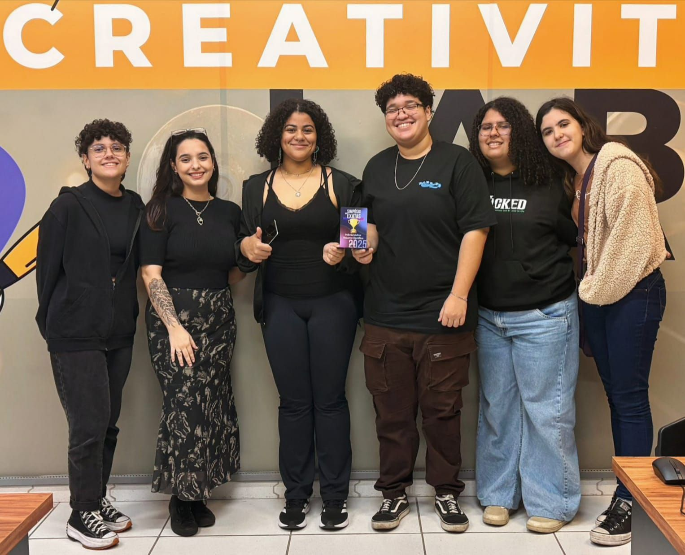
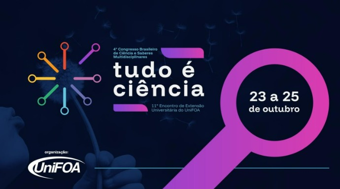

Sobre o Projeto
O VolunCheer é uma plataforma de inovação social criada para democratizar o acesso ao voluntariado no Brasil, conectando pessoas dispostas a ajudar com organizações que necessitam de apoio. Desenvolvido com base na metodologia Design Thinking, o projeto prioriza a empatia e a usabilidade em todas as etapas, desde a identificação das dificuldades enfrentadas pelos voluntários até a criação de funcionalidades como filtros por área de interesse, geolocalização e perfis de ONGs.
Atualmente em desenvolvimento, o VolunCheer busca oferecer uma experiência acessível, intuitiva e segura, promovendo a cidadania ativa, o engajamento comunitário e a cultura da solidariedade, usando a tecnologia como ponte entre boas intenções e causas reais.
Reconhecimentos
Simpósio das Exatas:
O projeto VolunCheer recebeu reconhecimento no Simpósio das Exatas do Centro Universitário de Volta Redonda (UniFOA), onde conquistou o 1º lugar na categoria de Melhor Resumo. Esse resultado é fruto do esforço coletivo de uma equipe comprometida e apaixonada pela inovação social. A apresentação do projeto foi conduzida com excelência por Samara Leal, representando o grupo com dedicação e profissionalismo. A conquista também reflete o trabalho colaborativo das integrantes Bianca Machado, Elisa Corrêa Dacol, Lilian Lima, Mariana Santos Silva e Thaíssa Ferreira, que contribuíram com empenho em cada etapa do desenvolvimento. O grupo expressa profunda gratidão à orientadora, professora Luciane Jasmin de Deus, cuja orientação e apoio foram fundamentais para o sucesso do projeto. O VolunCheer segue em constante evolução, com o compromisso de transformar o protótipo em uma plataforma funcional que promova o voluntariado e o impacto social positivo.

‘Tudo é Ciência’, 4º Congresso Brasileiro de Ciência e Saberes Multidisciplinares e 11º Encontro de Extensão Universitária do UniFOA:
O projeto VolunCheer foi selecionado para participar do 4º Congresso Tudo é Ciência: A ciência como responsabilidade global, promovido pelo Centro Universitário de Volta Redonda – UniFOA. Essa conquista representa mais um passo importante na trajetória do nosso grupo e reforça o propósito do VolunCheer em promover impacto social por meio da tecnologia.
